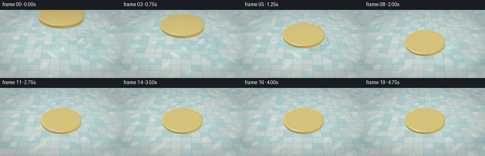
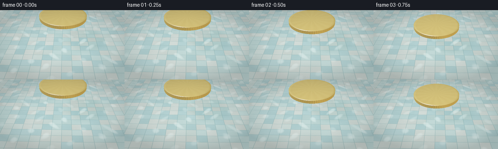
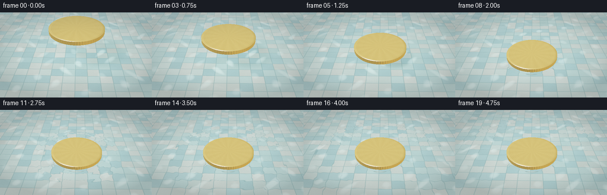
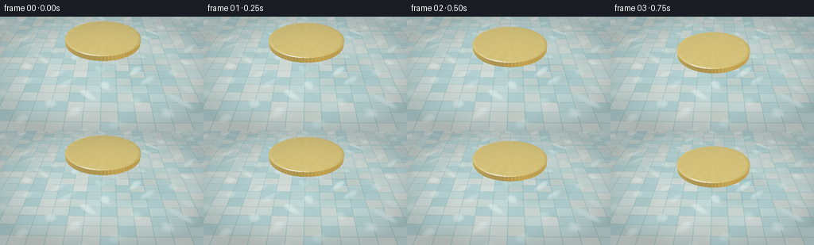

CODING AGENTS AS PIXEL WORLD MODELS
traex/DeepSeek-V4.1-Flash · mechanics_0012
点击播放 · 原生 RGB 像素
逐轮保存的候选
回放视频、检查图与代码变化。
每份候选均可单独播放。实际图片检查记录在下方工具轨迹中。
候选 01播放与检查图
点击播放 · 原生 RGB 像素


展开代码变化
--- 上一保存版本
+++ 本次保存版本
@@ -0,0 +1,537 @@
+from __future__ import annotations
+
+from pathlib import Path
+
+import numpy as np
+from PIL import Image, ImageFilter
+
+import artifact_io
+
+
+ROOT = Path(__file__).resolve().parent
+WIDTH = 256
+HEIGHT = 144
+N_FRAMES = 20
+FPS = 4.0
+SUPERSAMPLE = 2
+
+# Camera and scene
+CAMERA = np.array([0.06, 2.55, 3.62], dtype=np.float32)
+TARGET = np.array([0.0, -0.10, 0.13], dtype=np.float32)
+VFOV = np.deg2rad(28.0)
+COIN_CENTER_XZ = np.array([0.02, 0.20], dtype=np.float32)
+COIN_RADIUS = 0.62
+COIN_HALF_THICKNESS = 0.040
+WATER_Y = 0.0
+POOL_BOTTOM_Y = -0.37
+CONTACT_TIME = 2.0
+
+LIGHT_DIR = np.array([-0.52, 0.88, 0.38], dtype=np.float32)
+LIGHT_DIR /= np.linalg.norm(LIGHT_DIR)
+
+
+def normalize(v: np.ndarray, axis: int = -1) -> np.ndarray:
+ return v / np.maximum(np.linalg.norm(v, axis=axis, keepdims=True), 1e-8)
+
+
+def smoothstep(a: float | np.ndarray, b: float | np.ndarray, x: np.ndarray) -> np.ndarray:
+ t = np.clip((x - a) / (b - a), 0.0, 1.0)
+ return t * t * (3.0 - 2.0 * t)
+
+
+def mix(a, b, t):
+ return a * (1.0 - t) + b * t
+
+
+def camera_rays() -> tuple[np.ndarray, np.ndarray]:
+ h = HEIGHT * SUPERSAMPLE
+ w = WIDTH * SUPERSAMPLE
+ forward = normalize(TARGET - CAMERA)
+ right = normalize(np.cross(forward, np.array([0.0, 1.0, 0.0], dtype=np.float32)))
+ up = normalize(np.array([0.0, 1.0, 0.0], dtype=np.float32) - forward * forward[1])
+ aspect = w / h
+ tan_half = np.tan(VFOV * 0.5)
+ py, px = np.mgrid[0:h, 0:w].astype(np.float32)
+ sx = (2.0 * (px + 0.5) / w - 1.0) * tan_half * aspect
+ sy = (1.0 - 2.0 * (py + 0.5) / h) * tan_half
+ dirs = (
+ forward[None, None, :]
+ + sx[:, :, None] * right[None, None, :]
+ + sy[:, :, None] * up[None, None, :]
+ )
+ origins = np.broadcast_to(CAMERA, dirs.shape).copy().reshape(-1, 3)
+ return origins, normalize(dirs.reshape(-1, 3))
+
+
+def coin_motion(frame_index: int) -> tuple[float, float, float]:
+ t = frame_index / FPS
+ if t < CONTACT_TIME:
+ u = np.clip(t / CONTACT_TIME, 0.0, 1.0)
+ eased = u * u * (3.0 - 2.0 * u)
+ center_y = 0.040 + 0.88 * (1.0 - eased)
+ return center_y, 0.0, 0.0
+ age = t - CONTACT_TIME
+ bob = -0.015 * np.exp(-2.1 * age) * np.sin(9.5 * age)
+ tilt = 0.006 * np.exp(-1.5 * age) * np.sin(6.0 * age + 0.4)
+ return 0.040 + bob, tilt, 0.003 * np.exp(-2.4 * age) * np.sin(5.0 * age)
+
+
+def coin_relief(u: np.ndarray, v: np.ndarray) -> np.ndarray:
+ r = np.sqrt(u * u + v * v)
+ theta = np.arctan2(v, u)
+ rn = r / COIN_RADIUS
+
+ h = 0.00055 * np.cos(rn * 33.0 * np.pi) * smoothstep(0.64, 0.73, rn)
+ outer_rim = np.exp(-((rn - 0.905) / 0.038) ** 2)
+ h += 0.0012 * outer_rim
+ h += 0.00035 * np.cos(theta * 54.0) * outer_rim
+
+ inner_ring = np.exp(-((rn - 0.675) / 0.025) ** 2)
+ h += 0.0010 * inner_ring
+ h += 0.00030 * np.cos(theta * 32.0) * inner_ring
+
+ ray_band = smoothstep(0.20, 0.27, rn) * (1.0 - smoothstep(0.50, 0.57, rn))
+ rays = smoothstep(0.58, 0.94, 0.5 + 0.5 * np.cos(theta * 16.0))
+ h += 0.00155 * ray_band * rays
+
+ center = np.exp(-((rn / 0.145) ** 4))
+ h += 0.0017 * center
+ h += 0.00038 * np.cos(r * 260.0) * center
+
+ tiny = 0.00011 * np.cos(u * 390.0 + 1.7 * np.sin(v * 210.0))
+ tiny *= np.cos(v * 370.0 - 1.3 * np.sin(u * 190.0))
+ return h + tiny
+
+
+def coin_intersection(
+ origins: np.ndarray,
+ dirs: np.ndarray,
+ center: np.ndarray,
+ tilt_x: float,
+ tilt_z: float,
+) -> tuple[np.ndarray, np.ndarray, np.ndarray, np.ndarray, np.ndarray]:
+ """Intersect rays with a thin, optionally slightly tilted cylinder."""
+ n = dirs.shape[0]
+ o = np.broadcast_to(origins, dirs.shape).astype(np.float32)
+
+ # Work in coin-local coordinates for a tiny post-contact wobble.
+ cx = np.cos(tilt_x)
+ sx = np.sin(tilt_x)
+ cz = np.cos(tilt_z)
+ sz = np.sin(tilt_z)
+ rel = o - center[None, :]
+ x1 = cx * rel[:, 0] + sx * rel[:, 1]
+ y1 = -sx * rel[:, 0] + cx * rel[:, 1]
+ z1 = rel[:, 2]
+ ox = cz * x1 - sz * y1
+ oy = sz * x1 + cz * y1
+ oz = z1
+ dx0, dy0, dz0 = dirs[:, 0], dirs[:, 1], dirs[:, 2]
+ dx1 = cx * dx0 + sx * dy0
+ dy1 = -sx * dx0 + cx * dy0
+ dz1 = dz0
+ dx = cz * dx1 - sz * dy1
+ dy = sz * dx1 + cz * dy1
+ dz = dz1
+
+ t_best = np.full(n, np.inf, dtype=np.float32)
+ face = np.full(n, -1, dtype=np.int8)
+
+ a = dx * dx + dz * dz
+ b = 2.0 * (ox * dx + oz * dz)
+ c = ox * ox + oz * oz - COIN_RADIUS * COIN_RADIUS
+ disc = b * b - 4.0 * a * c
+ side_ok = disc >= 0.0
+ root = np.sqrt(np.maximum(disc, 0.0))
+ t_near = np.where(side_ok, (-b - root) / np.maximum(2.0 * a, 1e-8), np.inf)
+ t_far = np.where(side_ok, (-b + root) / np.maximum(2.0 * a, 1e-8), np.inf)
+ y_near = oy + t_near * dy
+ y_far = oy + t_far * dy
+ valid_near = side_ok & (t_near > 1e-4) & (np.abs(y_near) <= COIN_HALF_THICKNESS)
+ valid_far = side_ok & (t_far > 1e-4) & (np.abs(y_far) <= COIN_HALF_THICKNESS)
+ t_side = np.where(valid_near, t_near, np.where(valid_far, t_far, np.inf))
+ use_side = np.isfinite(t_side)
+ t_best = np.where(use_side, t_side, t_best)
+ face = np.where(use_side, 1, face)
+
+ for plane_y, plane_face in (
+ (COIN_HALF_THICKNESS, 0),
+ (-COIN_HALF_THICKNESS, 2),
+ ):
+ t = (plane_y - oy) / np.where(np.abs(dy) > 1e-7, dy, 1e-7)
+ hx = ox + t * dx
+ hz = oz + t * dz
+ valid = (t > 1e-4) & (hx * hx + hz * hz <= COIN_RADIUS * COIN_RADIUS) & (t < t_best)
+ t_best = np.where(valid, t, t_best)
+ face = np.where(valid, plane_face, face)
+
+ # Transform hit points and normals back to world space.
+ px = ox + t_best * dx
+ py = oy + t_best * dy
+ pz = oz + t_best * dz
+ nx = np.zeros(n, dtype=np.float32)
+ ny = np.ones(n, dtype=np.float32)
+ nz = np.zeros(n, dtype=np.float32)
+ side = face == 1
+ radial = np.maximum(np.sqrt(px * px + pz * pz), 1e-6)
+ nx[side] = px[side] / radial[side]
+ ny[side] = 0.0
+ nz[side] = pz[side] / radial[side]
+ ny[face == 2] = -1.0
+
+ # Inverse of the local rotation (X then Z).
+ wx = cz * nx + sz * ny
+ wy = -sz * nx + cz * ny
+ wz = nz
+ nx = cx * wx - sx * wy
+ ny = sx * wx + cx * wy
+ nz = wz
+ normals = normalize(np.stack([nx, ny, nz], axis=1))
+
+ hit_world = np.stack(
+ [
+ center[0] + ox + t_best * dx,
+ center[1] + oy + t_best * dy,
+ center[2] + oz + t_best * dz,
+ ],
+ axis=1,
+ )
+ local_xz = np.stack([px, pz], axis=1)
+ return t_best, normals, face, local_xz, hit_world
+
+
+def environment(dirs: np.ndarray, metal: bool = False) -> np.ndarray:
+ d = dirs
+ upward = np.clip(d[:, 1], -0.2, 1.0)
+ horizon = np.array([0.33, 0.46, 0.48], dtype=np.float32)
+ zenith = np.array([0.11, 0.22, 0.29], dtype=np.float32)
+ t = smoothstep(0.0, 0.75, upward)[:, None]
+ color = mix(horizon[None, :], zenith[None, :], t)
+
+ # A broad, warm studio reflection gives the metal readable highlights.
+ gx = (d[:, 0] + 0.40) / 0.34
+ gy = (d[:, 1] - 0.58) / 0.30
+ gz = (d[:, 2] - 0.02) / 0.52
+ glow = np.exp(-0.5 * (gx * gx + gy * gy + gz * gz))
+ warm = np.array([1.05, 0.82, 0.52], dtype=np.float32)
+ color += glow[:, None] * warm[None, :] * (1.25 if metal else 0.48)
+
+ if metal:
+ band = np.exp(-((d[:, 1] - 0.10) / 0.11) ** 2)
+ color *= (1.0 - 0.24 * band)[:, None]
+ return color
+
+
+def shade_coin(
+ origins: np.ndarray,
+ dirs: np.ndarray,
+ t: np.ndarray,
+ normals: np.ndarray,
+ face: np.ndarray,
+ local_xz: np.ndarray,
+ center: np.ndarray,
+) -> np.ndarray:
+ n = dirs.shape[0]
+ p = np.broadcast_to(origins, dirs.shape) + dirs * t[:, None]
+ nrm = normals.copy()
+ top = face == 0
+ if np.any(top):
+ u = local_xz[top, 0]
+ v = local_xz[top, 1]
+ eps = 0.0018
+ gx = (coin_relief(u + eps, v) - coin_relief(u - eps, v)) / (2.0 * eps)
+ gz = (coin_relief(u, v + eps) - coin_relief(u, v - eps)) / (2.0 * eps)
+ nrm[top] = normalize(np.stack([-gx, np.ones_like(gx), -gz], axis=1))
+
+ r = np.sqrt(u * u + v * v)
+ rim = smoothstep(0.90 * COIN_RADIUS, COIN_RADIUS, r)
+ radial = np.stack([u, np.zeros_like(u), v], axis=1)
+ radial = normalize(radial)
+ nrm[top] = normalize(nrm[top] + radial * (0.78 * rim)[:, None])
+
+ side = face == 1
+ if np.any(side):
+ px = p[side, 0] - center[0]
+ pz = p[side, 2] - center[2]
+ ang = np.arctan2(pz, px)
+ tangent = np.stack([-np.sin(ang), np.zeros_like(ang), np.cos(ang)], axis=1)
+ nrm[side] = normalize(nrm[side] + tangent * (0.20 * np.sin(ang * 74.0))[:, None])
+
+ V = -dirs
+ L = np.broadcast_to(LIGHT_DIR, dirs.shape)
+ H = normalize(L + V)
+ ndl = np.clip(np.sum(nrm * L, axis=1), 0.0, 1.0)
+ ndv = np.clip(np.sum(nrm * V, axis=1), 0.0, 1.0)
+ ndh = np.clip(np.sum(nrm * H, axis=1), 0.0, 1.0)
+ reflected = V - 2.0 * np.sum(V * nrm, axis=1)[:, None] * nrm
+ env = environment(reflected, metal=True)
+
+ gold = np.array([0.91, 0.54, 0.18], dtype=np.float32)
+ detail = np.ones((n, 1), dtype=np.float32)
+ if np.any(top):
+ u = local_xz[top, 0]
+ v = local_xz[top, 1]
+ rn = np.sqrt(u * u + v * v) / COIN_RADIUS
+ engrave = 0.045 * np.cos(rn * 39.0 * np.pi)
+ engrave += 0.025 * np.cos(np.arctan2(v, u) * 16.0)
+ detail[top] = (1.0 + engrave)[:, None]
+
+ face_gain = np.where(face == 0, 1.0, np.where(face == 1, 0.76, 0.42)).astype(np.float32)
+ base = gold[None, :] * detail * face_gain[:, None]
+ color = base * (0.12 + 0.44 * ndl[:, None])
+ color += base * env * 0.62
+ color += (0.72 + 0.28 * env) * (np.power(ndh, 105.0) * 2.5)[:, None]
+ color += base * (np.power(ndh, 16.0) * 0.23)[:, None]
+ color += gold[None, :] * (np.power(1.0 - ndv, 4.0) * 0.18)[:, None]
+ return color
+
+
+def water_height(x: np.ndarray, z: np.ndarray, time_s: float, coin_y: float) -> np.ndarray:
+ dx = x - COIN_CENTER_XZ[0]
+ dz = z - COIN_CENTER_XZ[1]
+ r = np.sqrt(dx * dx + dz * dz)
+
+ # Very low-amplitude ambient capillary motion.
+ h = 0.00065 * np.sin(10.5 * x + 7.0 * z + 0.65 * time_s)
+ h += 0.00042 * np.sin(17.0 * z - 4.2 * x - 0.43 * time_s)
+ h += 0.00025 * np.cos(29.0 * (x + 0.7 * z) + 0.22 * time_s)
+
+ contact = smoothstep(CONTACT_TIME - 0.18, CONTACT_TIME + 0.03, time_s)
+ if contact > 0.0:
+ meniscus = np.exp(-((r - COIN_RADIUS) / 0.085) ** 2)
+ shoulder = np.exp(-((r - COIN_RADIUS - 0.085) / 0.045) ** 2)
+ h -= 0.021 * contact * meniscus
+ h += 0.0055 * contact * shoulder
+
+ age = max(0.0, time_s - CONTACT_TIME)
+ if age > 0.0:
+ # A primary gravity-capillary ring followed by a quieter secondary ring.
+ front1 = COIN_RADIUS + 0.47 * age
+ d1 = r - front1
+ env1 = np.exp(-(d1 / (0.15 + 0.015 * age)) ** 2)
+ h += 0.0072 * np.exp(-0.42 * age) * np.sin(2.0 * np.pi * d1 / 0.175) * env1
+
+ front2 = COIN_RADIUS + 0.28 * max(0.0, age - 0.12)
+ d2 = r - front2
+ env2 = np.exp(-(d2 / 0.11) ** 2)
+ h += 0.0033 * np.exp(-0.62 * age) * np.sin(2.0 * np.pi * d2 / 0.115 + 1.2) * env2
+ return h
+
+
+def hash21(ix: np.ndarray, iz: np.ndarray) -> np.ndarray:
+ value = np.sin(ix * 127.1 + iz * 311.7) * 43758.5453123
+ return value - np.floor(value)
+
+
+def pool_bottom(
+ x: np.ndarray,
+ z: np.ndarray,
+ time_s: float,
+ coin_center: np.ndarray,
+) -> np.ndarray:
+ tx = 0.285
+ tz = 0.225
+ gx = (x + 2.0) / tx
+ gz = (z + 2.0) / tz
+ ix = np.floor(gx)
+ iz = np.floor(gz)
+ fx = gx - ix
+ fz = gz - iz
+ edge = np.maximum(np.abs(fx - 0.5), np.abs(fz - 0.5))
+ grout = smoothstep(0.455, 0.493, edge)
+
+ h1 = hash21(ix, iz)
+ h2 = hash21(ix + 17.0, iz - 9.0)
+ palette = np.array(
+ [
+ [0.50, 0.66, 0.61],
+ [0.61, 0.70, 0.62],
+ [0.42, 0.59, 0.58],
+ [0.68, 0.70, 0.61],
+ ],
+ dtype=np.float32,
+ )
+ tile = palette[(np.floor(h1 * 4.0).astype(np.int32)) % 4]
+ tile *= (0.92 + 0.16 * h2)[:, None]
+
+ mottle = 0.026 * np.sin(8.0 * x + 5.0 * z) + 0.018 * np.cos(17.0 * z - 3.0 * x)
+ tile *= (1.0 + mottle)[:, None]
+ grout_color = np.array([0.27, 0.38, 0.37], dtype=np.float32)
+ color = mix(tile, grout_color[None, :], (0.74 * grout)[:, None])
+
+ wave1 = np.sin(8.2 * x + 1.15 * np.sin(5.1 * z + 0.28 * time_s))
+ wave2 = np.sin(7.4 * z - 1.05 * np.sin(4.7 * x - 0.22 * time_s))
+ caustic = smoothstep(0.53, 0.98, wave1 * wave2)
+ caustic *= 0.48 + 0.52 * smoothstep(0.42, 0.88, 0.5 + 0.5 * np.sin(2.7 * x + 4.1 * z))
+ color += np.array([0.27, 0.35, 0.31], dtype=np.float32)[None, :] * caustic[:, None]
+
+ # Soft projected coin shadow; its blur and contrast reveal the drop height.
+ coin_y = float(coin_center[1])
+ travel = (coin_y - POOL_BOTTOM_Y) / LIGHT_DIR[1]
+ shadow_x = coin_center[0] - LIGHT_DIR[0] * travel
+ shadow_z = coin_center[2] - LIGHT_DIR[2] * travel
+ sd = np.sqrt(((x - shadow_x) / (COIN_RADIUS * 1.06)) ** 2 + ((z - shadow_z) / (COIN_RADIUS * 1.06)) ** 2)
+ blur = 0.15 + 0.36 * smoothstep(0.05, 0.65, coin_y)
+ shadow = np.exp(-((sd - 0.50) / blur) ** 4)
+ shadow *= 0.17 + 0.13 * (1.0 - smoothstep(0.0, 0.65, coin_y))
+ color *= (1.0 - shadow)[:, None]
+
+ return color
+
+
+def shade_water(
+ origins: np.ndarray,
+ dirs: np.ndarray,
+ t_water: np.ndarray,
+ time_s: float,
+ coin_center: np.ndarray,
+ tilt_x: float,
+ tilt_z: float,
+) -> np.ndarray:
+ n = dirs.shape[0]
+ p = np.broadcast_to(origins, dirs.shape) + dirs * t_water[:, None]
+ x = p[:, 0]
+ z = p[:, 2]
+ eps = 0.0026
+ h0 = water_height(x, z, time_s, coin_center[1])
+ dhdx = (water_height(x + eps, z, time_s, coin_center[1]) - water_height(x - eps, z, time_s, coin_center[1])) / (2.0 * eps)
+ dhdz = (water_height(x, z + eps, time_s, coin_center[1]) - water_height(x, z - eps, time_s, coin_center[1])) / (2.0 * eps)
+ normal = normalize(np.stack([-dhdx, np.ones_like(dhdx), -dhdz], axis=1))
+ p[:, 1] = WATER_Y + h0
+
+ V = -dirs
+ cos_i = np.clip(np.sum(V * normal, axis=1), 0.02, 1.0)
+ fresnel = 0.020 + 0.980 * (1.0 - cos_i) ** 5
+
+ reflected = dirs - 2.0 * np.sum(dirs * normal, axis=1)[:, None] * normal
+ refl_t, refl_n, refl_face, refl_local, _ = coin_intersection(
+ p, reflected, coin_center, tilt_x, tilt_z
+ )
+ reflected_coin = np.isfinite(refl_t)
+ reflection = environment(reflected, metal=False)
+ if np.any(reflected_coin):
+ reflection[reflected_coin] = shade_coin(
+ p[reflected_coin],
+ reflected[reflected_coin],
+ refl_t[reflected_coin],
+ refl_n[reflected_coin],
+ refl_face[reflected_coin],
+ refl_local[reflected_coin],
+ coin_center,
+ )
+
+ eta = 1.0 / 1.333
+ k = 1.0 - eta * eta * (1.0 - cos_i * cos_i)
+ refr = eta * dirs + (eta * cos_i - np.sqrt(np.maximum(k, 0.0)))[:, None] * normal
+ distance_to_bottom = (POOL_BOTTOM_Y - p[:, 1]) / np.minimum(refr[:, 1], -1e-5)
+ bottom_p = p + refr * distance_to_bottom[:, None]
+ bottom = pool_bottom(bottom_p[:, 0], bottom_p[:, 2], time_s, coin_center)
+ path = np.linalg.norm(bottom_p - p, axis=1)
+ absorption = np.array([0.16, 0.055, 0.045], dtype=np.float32)
+ transmittance = np.exp(-absorption[None, :] * path[:, None])
+ water_tint = np.array([0.84, 0.96, 0.98], dtype=np.float32)
+ refracted = bottom * transmittance * water_tint[None, :]
+
+ H = normalize(LIGHT_DIR[None, :] + V)
+ ndh = np.clip(np.sum(normal * H, axis=1), 0.0, 1.0)
+ surface_glint = (np.power(ndh, 210.0) * 1.2)[:, None] * np.array([0.82, 0.94, 0.92])
+
+ color = fresnel[:, None] * reflection + (1.0 - fresnel)[:, None] * refracted
+ color += surface_glint
+ return color
+
+
+def postprocess(hdr: np.ndarray, frame_index: int) -> np.ndarray:
+ h = hdr.shape[0]
+ w = hdr.shape[1]
+
+ # A restrained bloom keeps the gold and water highlights from looking flat.
+ highlight = np.maximum(hdr - 0.72, 0.0)
+ hi8 = np.clip(np.power(np.clip(highlight / 3.5, 0.0, 1.0), 1.0 / 2.2) * 255.0, 0, 255).astype(np.uint8)
+ blurred = np.asarray(Image.fromarray(hi8).filter(ImageFilter.GaussianBlur(radius=4.0))).astype(np.float32) / 255.0
+ hdr = hdr + np.power(blurred, 2.2) * 0.75
+
+ # ACES-style shoulder.
+ x = np.maximum(hdr, 0.0)
+ mapped = (x * (2.51 * x + 0.03)) / (x * (2.43 * x + 0.59) + 0.14)
+ mapped = np.clip(mapped, 0.0, 1.0)
+ srgb = np.power(mapped, 1.0 / 2.2)
+
+ yy, xx = np.mgrid[0:h, 0:w].astype(np.float32)
+ nx = (xx + 0.5) / w * 2.0 - 1.0
+ ny = (yy + 0.5) / h * 2.0 - 1.0
+ vignette = 1.0 - 0.16 * np.clip((nx * nx * 0.72 + ny * ny * 0.85), 0.0, 1.0) ** 1.35
+ srgb *= vignette[:, :, None]
+
+ # Cool the shadows and leave the gold highlights warm.
+ lum = np.sum(srgb * np.array([0.2126, 0.7152, 0.0722]), axis=2, keepdims=True)
+ shadow_tint = np.array([0.965, 1.005, 1.025], dtype=np.float32)
+ srgb *= mix(np.ones((1, 1, 3), dtype=np.float32), shadow_tint[None, None, :], (1.0 - lum) * 0.55)
+
+ rng = np.random.default_rng(1000 + frame_index)
+ grain = rng.normal(0.0, 0.0032, (h, w, 1)).astype(np.float32)
+ srgb = np.clip(srgb + grain, 0.0, 1.0)
+ return srgb
+
+
+def render() -> np.ndarray:
+ origins, dirs = camera_rays()
+ frames = []
+ for frame_index in range(N_FRAMES):
+ time_s = frame_index / FPS
+ coin_y, tilt_x, tilt_z = coin_motion(frame_index)
+ coin_center = np.array(
+ [COIN_CENTER_XZ[0], coin_y, COIN_CENTER_XZ[1]],
+ dtype=np.float32,
+ )
+
+ t_water = (WATER_Y - CAMERA[1]) / dirs[:, 1]
+ coin_t, coin_n, coin_face, coin_local, _ = coin_intersection(
+ origins[0], dirs, coin_center, tilt_x, tilt_z
+ )
+ coin_hit = np.isfinite(coin_t) & (coin_t > 0.0) & (coin_t < t_water)
+ water_hit = np.isfinite(t_water) & (t_water > 0.0) & ~coin_hit
+
+ hdr = np.zeros((dirs.shape[0], 3), dtype=np.float32)
+ if np.any(water_hit):
+ hdr[water_hit] = shade_water(
+ origins[0],
+ dirs[water_hit],
+ t_water[water_hit],
+ time_s,
+ coin_center,
+ tilt_x,
+ tilt_z,
+ )
+ if np.any(coin_hit):
+ hdr[coin_hit] = shade_coin(
+ origins[0],
+ dirs[coin_hit],
+ coin_t[coin_hit],
+ coin_n[coin_hit],
+ coin_face[coin_hit],
+ coin_local[coin_hit],
+ coin_center,
+ )
+
+ h = HEIGHT * SUPERSAMPLE
+ w = WIDTH * SUPERSAMPLE
+ hdr = hdr.reshape(h, w, 3)
+ image = postprocess(hdr, frame_index)
+ image8 = np.clip(image * 255.0 + 0.5, 0, 255).astype(np.uint8)
+ pil = Image.fromarray(image8).resize((WIDTH, HEIGHT), Image.Resampling.LANCZOS)
+ pil = pil.filter(ImageFilter.UnsharpMask(radius=0.65, percent=16, threshold=2))
+ frame = np.asarray(pil, dtype=np.uint8)
+ frames.append(frame)
+ print(
+ f"frame {frame_index:02d}: coin_y={coin_y:.3f}, "
+ f"mean={frame.mean(axis=(0, 1)).round(1)}",
+ flush=True,
+ )
+ return np.stack(frames, axis=0)
+
+
+if __name__ == "__main__":
+ video = render()
+ artifact_io.save(video, ROOT)
+ print(f"saved {video.shape} RGB video artifacts to {ROOT}")
候选 02播放与检查图
点击播放 · 原生 RGB 像素


展开代码变化
--- 上一保存版本
+++ 本次保存版本
@@ -16,9 +16,9 @@
SUPERSAMPLE = 2
# Camera and scene
-CAMERA = np.array([0.06, 2.55, 3.62], dtype=np.float32)
-TARGET = np.array([0.0, -0.10, 0.13], dtype=np.float32)
-VFOV = np.deg2rad(28.0)
+CAMERA = np.array([0.06, 2.48, 3.56], dtype=np.float32)
+TARGET = np.array([0.0, -0.02, 0.15], dtype=np.float32)
+VFOV = np.deg2rad(28.5)
COIN_CENTER_XZ = np.array([0.02, 0.20], dtype=np.float32)
COIN_RADIUS = 0.62
COIN_HALF_THICKNESS = 0.040
@@ -68,7 +68,7 @@
if t < CONTACT_TIME:
u = np.clip(t / CONTACT_TIME, 0.0, 1.0)
eased = u * u * (3.0 - 2.0 * u)
- center_y = 0.040 + 0.88 * (1.0 - eased)
+ center_y = 0.040 + 0.70 * (1.0 - eased)
return center_y, 0.0, 0.0
age = t - CONTACT_TIME
bob = -0.015 * np.exp(-2.1 * age) * np.sin(9.5 * age)
@@ -309,12 +309,12 @@
front1 = COIN_RADIUS + 0.47 * age
d1 = r - front1
env1 = np.exp(-(d1 / (0.15 + 0.015 * age)) ** 2)
- h += 0.0072 * np.exp(-0.42 * age) * np.sin(2.0 * np.pi * d1 / 0.175) * env1
+ h += 0.0105 * np.exp(-0.40 * age) * np.sin(2.0 * np.pi * d1 / 0.175) * env1
front2 = COIN_RADIUS + 0.28 * max(0.0, age - 0.12)
d2 = r - front2
env2 = np.exp(-(d2 / 0.11) ** 2)
- h += 0.0033 * np.exp(-0.62 * age) * np.sin(2.0 * np.pi * d2 / 0.115 + 1.2) * env2
+ h += 0.0048 * np.exp(-0.60 * age) * np.sin(2.0 * np.pi * d2 / 0.115 + 1.2) * env2
return h
可观测工具轨迹
实际执行的命令与返回图片。
命令 1exit 0
/bin/bash -c "pwd && rg --files -g 'prompt.txt' -g 'GENERATION_RULES.md' -g 'task_spec.json' -g '"'!**/.git/**'"'"
命令 2exit 0
/bin/bash -c 'ls -la'
命令 3exit 0
/bin/bash -c 'git status --short --branch'
命令 4exit 0
/bin/bash -c 'cat prompt.txt'
命令 5exit 0
/bin/bash -c 'cat GENERATION_RULES.md'
命令 6exit 0
/bin/bash -c 'cat task_spec.json'
命令 7exit 0
/bin/bash -c "sed -n '1,240p' artifact_io.py"
命令 8exit 0
/bin/bash -c "python - <<'PY'
import numpy, PIL
print('numpy', numpy.__version__)
print('PIL', PIL.__version__)
PY"命令 9exit 0
/bin/bash -c 'command -v ffmpeg || true; command -v ffprobe || true'
命令 10exit 0
/bin/bash -c "find .tmp -maxdepth 2 -type f -printf '%p %s\\n' | head -50"
命令 11exit 1
/bin/bash -c 'python generate.py'
命令 12exit 1
/bin/bash -c 'python generate.py'
命令 13exit 0
/bin/bash -c 'python generate.py'
命令 14exit 0
/bin/bash -c 'command -v chafa || true; command -v viu || true; command -v jp2 || true; command -v img2txt || true; command -v identify || true'
命令 15exit 0
/bin/bash -c "python - <<'PY'
from PIL import Image
im=Image.open('inspection.png')
print(im.size, im.mode)
# basic region stats on each source frame
import numpy as np, glob
for p in sorted(glob.glob('frames/*.png'))[:10]:
a=np.asarray(Image.open(p)).astype(float)
# center object-region vs surrounding
c=a[35:110,75:180]
e=a[0:30]
print(p, 'center', c.mean((0,1)).round(1), 'top', e.mean((0,1)).round(1), 'contrast', round(float(c.std()),1))
PY"命令 16exit 0
/bin/bash -c "python - <<'PY'
from PIL import Image, ImageDraw
import numpy as np
# An objective quick-look: frames, plus edge map and center crops for inspection only.
ims=[Image.open(f'frames/{i:02d}.png') for i in [0,4,7,8,9,12,16,19]]
for i,im in enumerate(ims):
im.save(f'.tmp/check_{i}.png')
print('saved quicklooks')
PY"命令 17exit 0
/bin/bash -c "python - <<'PY'
from PIL import Image
import numpy as np
# Print a compact color block preview to reason about composition despite no image display.
im=Image.open('frames/08.png').resize((64,36))
a=np.asarray(im).astype(int)
chars=' .:-=+*#%@'
# luminance and dominant hue class
for row in a:
s=''
for r,g,b in row:
l=(r*2+g*3+b)//6
s+=chars[min(9,l*10//256)]
print(s)
PY"命令 18exit 0
/bin/bash -c "python - <<'PY'
from PIL import Image
import numpy as np
for idx in [0,4,8,12,19]:
a=np.asarray(Image.open(f'frames/{idx:02d}.png')).astype(float)
r,g,b=a[:,:,0],a[:,:,1],a[:,:,2]
mask=(r-b>22)&(r>130)&(g>90)
ys,xs=np.where(mask)
print(idx, 'gold-ish pixels',len(xs), 'bbox', (xs.min(),ys.min(),xs.max(),ys.max()) if len(xs) else None, 'mean',a[mask].mean(0).round(1) if len(xs) else None)
PY"命令 19exit 0
/bin/bash -c "python - <<'PY'
from PIL import Image
import numpy as np
# six-letter hue map, 48x27, to inspect actual object and water separation
im=Image.open('frames/08.png').resize((64,36))
a=np.asarray(im).astype(int)
for row in a:
s=''
for r,g,b in row:
if r-b>22 and r>135 and g>85: c='G'
elif r-b>10 and r>150: c='g'
elif b-r>10: c='b'
elif g-r>6: c='c'
elif (r+g+b)<210: c='d'
elif (r+g+b)>660: c='W'
else: c='.'
s+=c
print(s)
PY"命令 20exit 0
/bin/bash -c "python - <<'PY'
from PIL import Image
import numpy as np
# vertical/lateral color profile through center at landing, objective framing check
im=Image.open('frames/08.png'); a=np.asarray(im).astype(float)
for y in [0,10,20,30,40,50,60,70,80,90,100,110,120,130,140]:
print(y, a[y,128].round(0).astype(int).tolist(), a[y,20].round(0).astype(int).tolist(), a[y,235].round(0).astype(int).tolist())
PY"命令 21exit 0
/bin/bash -c "python - <<'PY'
from PIL import Image
import numpy as np
# Use a simple edge detector to see whether coin emboss and water ripple detail survive final size.
for idx in [0,8,12,19]:
a=np.asarray(Image.open(f'frames/{idx:02d}.png').convert('L')).astype(float)
gx=np.abs(np.diff(a,axis=1)); gy=np.abs(np.diff(a,axis=0))
print(idx, 'grad mean/p95', round(float(gx.mean()+gy.mean()),2), round(float(np.percentile(np.r_[gx.ravel(),gy.ravel()],95)),1))
PY"命令 22exit 0
/bin/bash -c 'mkdir -p .tmp/candidate_01 && cp -f frames/*.png .tmp/candidate_01/ && cp -f inspection.png transition_check.png index.html pixels.npz .tmp/candidate_01/ 2>/dev/null || true'
命令 23exit 0
/bin/bash -c 'python generate.py'
命令 24exit 0
/bin/bash -c "python - <<'PY'
from PIL import Image
import numpy as np
for idx in [0,4,8,12,19]:
a=np.asarray(Image.open(f'frames/{idx:02d}.png')).astype(float)
r,g,b=a[:,:,0],a[:,:,1],a[:,:,2]
mask=(r-b>22)&(r>130)&(g>90)
ys,xs=np.where(mask)
print(idx, 'gold',len(xs),'bbox',(int(xs.min()),int(ys.min()),int(xs.max()),int(ys.max())), 'mean',a[mask].mean(0).round(1))
PY"命令 25exit 0
/bin/bash -c "python - <<'PY'
from PIL import Image
import numpy as np
# Quantify late-frame change outside the coin, i.e. visible ripple animation.
prev=None
for i in range(8,20):
a=np.asarray(Image.open(f'frames/{i:02d}.png')).astype(float)
if prev is not None:
d=np.abs(a-prev).mean(2)
mask=np.ones_like(d,dtype=bool)
yy,xx=np.ogrid[:144,:256]
mask &= ((xx-128)**2/(65**2)+(yy-74)**2/(55**2)>1)
print(i, 'mean change',round(float(d.mean()),3),'outside coin',round(float(d[mask].mean()),3),'p99',round(float(np.percentile(d[mask],99)),1))
prev=a
PY"命令 26exit 0
/bin/bash -c "python - <<'PY'
from PIL import Image
import numpy as np
im=Image.open('frames/12.png').resize((64,36))
a=np.asarray(im).astype(int)
for row in a:
s=''
for r,g,b in row:
if r-b>22 and r>135 and g>85:c='G'
elif r-b>10 and r>150:c='g'
elif b-r>10:c='b'
elif g-r>6:c='c'
elif (r+g+b)<210:c='d'
elif (r+g+b)>660:c='W'
else:c='.'
s+=c
print(s)
PY"命令 27exit 0
/bin/bash -c "python - <<'PY'
from PIL import Image, ImageDraw
import numpy as np
# Contact sheet at 2x scale for visual inspection by the local artifact consumer.
files=[0,2,4,6,7,8,10,12,14,16,18,19]
w,h=256,144
sheet=Image.new('RGB',(w*4,h*3),(30,30,30))
for k,i in enumerate(files):
im=Image.open(f'frames/{i:02d}.png')
sheet.paste(im,((k%4)*w,(k//4)*h))
sheet.save('.tmp/contact_sheet_2x.png')
# inspect per-frame motion magnitude between adjacent frames
prev=None
for i in range(20):
a=np.asarray(Image.open(f'frames/{i:02d}.png')).astype(float)
if prev is not None:
print(f'{i:02d}', round(float(np.abs(a-prev).mean()),3))
prev=a
PY"命令 28exit 0
/bin/bash -c "python - <<'PY'
from PIL import Image
import numpy as np
# Pixel-level measurements around the impact boundary; inspect highlights and ripple contrast.
for idx in [7,8,9,10,11,12]:
a=np.asarray(Image.open(f'frames/{idx:02d}.png')).astype(float)
g=a.mean(2)
# horizontal centerline values just outside coin
vals=[]
for x in [35,45,55,65,75,85,95,170,180,190,200,210,220]:
vals.append(int(g[74,x]))
print(idx, vals)
PY"命令 29exit 0
/bin/bash -c 'ls -lh generate.py task_spec.json prompt.txt GENERATION_RULES.md frames inspection.png transition_check.png index.html pixels.npz'
命令 30exit 0
/bin/bash -c "python - <<'PY'
import json, pathlib, numpy as np
from PIL import Image
root=pathlib.Path('.')
spec=json.loads((root/'task_spec.json').read_text())
files=sorted((root/'frames').glob('*.png'))
assert len(files)==spec['frames'], len(files)
for i,p in enumerate(files):
im=Image.open(p)
assert im.size==(spec['width'],spec['height']) and im.mode=='RGB', (p,im.size,im.mode)
arr=np.asarray([np.asarray(Image.open(p)) for p in files])
assert arr.shape==(20,144,256,3) and arr.dtype==np.uint8
packed=np.load(root/'pixels.npz')['pixels']
assert packed.shape==(144,256,20) and packed.dtype==np.uint32
first=packed[:,:,0]
rec=(arr[0,:,:,0].astype(np.uint32)<<16)|(arr[0,:,:,1].astype(np.uint32)<<8)|arr[0,:,:,2]
assert np.array_equal(first,rec)
print('validated',arr.shape,'duration',len(files)/spec['fps'],'s','mean',arr.mean((0,1,2)).round(2).tolist())
print('pixels packed range',int(packed.min()),int(packed.max()))
PY"命令 31exit 0
/bin/bash -c 'mkdir -p .tmp/candidate_02 && cp -f frames/*.png .tmp/candidate_02/ && cp -f inspection.png transition_check.png index.html pixels.npz .tmp/candidate_02/'
命令 32exit 0
/bin/bash -c 'python generate.py'
命令 33exit 0
/bin/bash -c "python - <<'PY'
from pathlib import Path
import hashlib, json
import numpy as np
from PIL import Image
root=Path('.')
spec=json.loads((root/'task_spec.json').read_text())
files=sorted((root/'frames').glob('*.png'))
assert len(files)==spec['frames']
for p in files:
im=Image.open(p)
assert im.size==(spec['width'],spec['height']) and im.mode=='RGB'
arr=np.stack([np.asarray(Image.open(p)) for p in files])
assert arr.shape==(20,144,256,3) and arr.dtype==np.uint8
packed=np.load(root/'pixels.npz')['pixels']
assert packed.shape==(144,256,20) and packed.dtype==np.uint32
rec=(arr[0,:,:,0].astype('uint32')<<16)|(arr[0,:,:,1].astype('uint32')<<8)|arr[0,:,:,2]
assert np.array_equal(packed[:,:,0],rec)
print('FINAL PASS')
print('frames',len(files),'shape',arr.shape,'fps',spec['fps'],'duration',len(files)/spec['fps'])
print('all RGB',arr[...,0].mean().round(2),arr[...,1].mean().round(2),arr[...,2].mean().round(2))
print('index bytes',(root/'index.html').stat().st_size,'pixels bytes',(root/'pixels.npz').stat().st_size)
print('sha256',hashlib.sha256((root/'pixels.npz').read_bytes()).hexdigest())
PY"命令 34exit 0
/bin/bash -c 'git status --short -- generate.py frames pixels.npz index.html inspection.png transition_check.png'
命令 35exit 0
/bin/bash -c 'git status --short --untracked-files=all -- generate.py frames/00.png pixels.npz index.html inspection.png transition_check.png .tmp/candidate_02/00.png'
命令 36exit 0
/bin/bash -c 'git check-ignore -v generate.py frames/00.png pixels.npz index.html inspection.png transition_check.png || true; ls -l generate.py'
保存候选 2 份；完成命令 36 次；可验证图片返回 0 张。原始 API 响应与完整日志保留在本地。